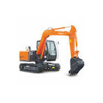
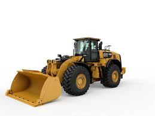
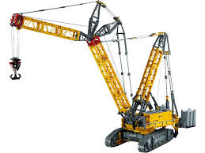
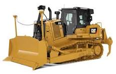
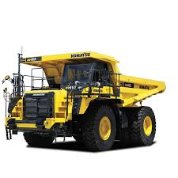
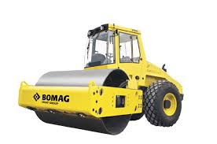
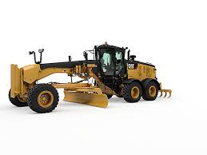
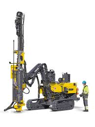
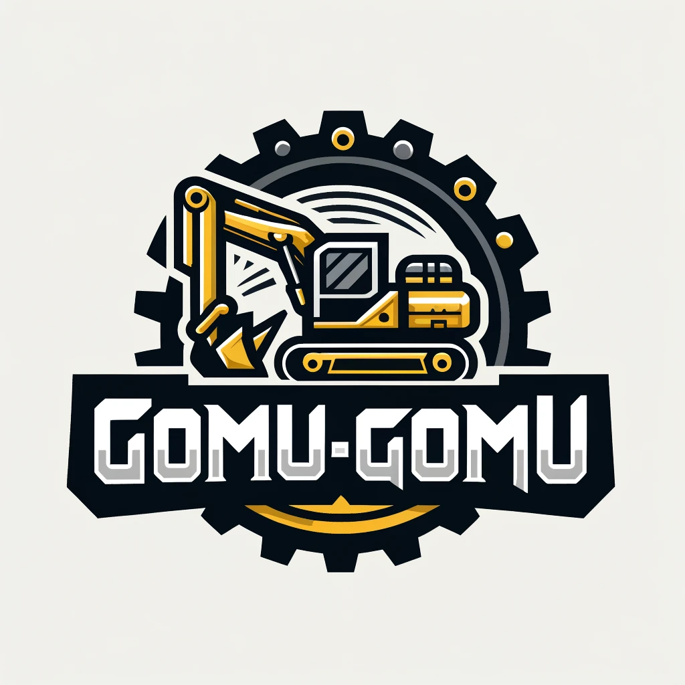

<!DOCTYPE html>
<html lang="en">
  <head>
    <meta charset="UTF-8" />
    <meta http-equiv="X-UA-Compatible" content="IE=edge" />
    <meta name="viewport" content="width=device-width, initial-scale=1.0" />
    <title>Toko Alat Berat</title>
    <link rel="stylesheet" href="stylesheet.css" />
   
  </head>
  <script type="application/ld+json">
    {
      "@context": "http://schema.org",
      "@type": "Store",
      "name": "Toko Alat Berat",
      "description": "Solusi Anda untuk kebutuhan alat berat berkualitas",
      "address": {
        "@type": "PostalAddress",
        "streetAddress": "Jl. Raya Industri No. 10",
        "addressLocality": "Jakarta",
        "addressRegion": "DKI Jakarta",
        "postalCode": "12345",
        "addressCountry": "ID"
      },
      "contactPoint": {
        "@type": "ContactPoint",
        "telephone": "+62 123 4567",
        "contactType": "Customer Service",
        "availableLanguage": "Indonesian"
      },
      "openingHoursSpecification": {
        "@type": "OpeningHoursSpecification",
        "dayOfWeek": [
          "Monday",
          "Tuesday",
          "Wednesday",
          "Thursday",
          "Friday"
        ],
        "opens": "09:00",
        "closes": "17:00"
      },
      "department": [
        {
          "@type": "Store",
          "name": "Excavator ZX-200",
          "image": "images/excavator.jpg",
          "description": "Mesin penggali serbaguna dengan efisiensi tinggi. Ideal untuk pekerjaan konstruksi skala besar."
        },
        {
          "@type": "Store",
          "name": "Bulldozer D7E",
          "image": "images/bulldozer.jpg",
          "description": "Bulldozer yang sangat efisien untuk pekerjaan penggalian tanah dan proyek infrastruktur."
        },
        {
          "@type": "Store",
          "name": "Crane Liebherr",
          "image": "images/crane.jpg",
          "description": "Crane dengan kemampuan angkat beban hingga 300 ton, ideal untuk proyek konstruksi besar."
        },
        {
          "@type": "Store",
          "name": "Wheel Loader CAT 980M",
          "image": "images/loader.jpg",
          "description": "Memiliki daya angkut material yang tinggi dan efisiensi dalam pemindahan material berat."
        },
        {
          "@type": "Store",
          "name": "Dump Truck Komatsu",
          "image": "images/dump-truck.jpg",
          "description": "Truk angkut material dengan kapasitas besar, cocok untuk proyek pertambangan dan pembangunan jalan."
        },
        {
          "@type": "Store",
          "name": "Compactor Bomag",
          "image": "images/compactor.jpg",
          "description": "Mesin pemadat tanah dengan desain ergonomis dan performa tinggi untuk pembangunan jalan."
        },
        {
          "@type": "Store",
          "name": "Dozer Komatsu D85EX",
          "image": "images/dozer.jpg",
          "description": "Dozer dengan kekuatan tinggi untuk penggalian tanah, pemindahan material, dan pekerjaan berat lainnya."
        },
        {
          "@type": "Store",
          "name": "Motor Grader CAT 14M",
          "image": "images/grader.jpg",
          "description": "Grader yang ideal untuk pemadatan tanah, pembangunan jalan, dan penataan permukaan tanah."
        },
        {
          "@type": "Store",
          "name": "Drill Rig Atlas Copco",
          "image": "images/drill.jpg",
          "description": "Alat pengebor tanah dengan kedalaman tinggi, ideal untuk proyek pengeboran geotermal dan tambang."
        }
      ]
    }
  </script>
  </body>
</html>

    <script>
        
    </script>
    <header>
      <div class="jumbotron">
        <h1>Toko Alat Berat</h1>
        <p>Solusi Anda untuk kebutuhan alat berat berkualitas</p>
      </div>
      <nav>
        <ul>
          <li><a href="#produk">Produk</a></li>
          <li><a href="#tentang">Tentang Kami</a></li>
          <li><a href="#kontak">Kontak</a></li>
          <li class="dropdown">
            <a href="#" class="dropbtn">Menu Produk</a>
            <div class="dropdown-content">
              <a href="#excavator">Excavator ZX-200</a>
              <a href="#bulldozer">Bulldozer D7E</a>
              <a href="#crane">Crane Liebherr</a>
              <a href="#loader">Wheel Loader CAT 980M</a>
              <a href="#dump-truck">Dump Truck Komatsu</a>
              <a href="#compactor">Compactor Bomag</a>
              <a href="#dozer">Dozer Komatsu D85EX</a>
              <a href="#grader">Motor Grader CAT 14M</a>
              <a href="#drill">Drill Rig Atlas Copco</a>
            </div>
          </li>
          <li class="search-bar">
            <input type="text" placeholder="Cari Produk..." />
          </li>
        </ul>
      </nav>
    </header>

    <main>
      <div id="content">

         <!-- Deskripsi Toko -->
         <section class="card">
            <h3>Tentang Toko Kami</h3>
            <p>
              Kami adalah toko alat berat yang menyediakan berbagai jenis alat
              berat untuk kebutuhan proyek konstruksi dan pertambangan. Dengan
              pengalaman bertahun-tahun, kami memberikan alat-alat yang berkualitas
              dan dapat diandalkan untuk mendukung keberhasilan proyek Anda.
            </p>
          </section>

        <h2 id="produk">Produk Kami</h2>

        <!-- Produk Deskripsi (9 Produk) -->
        <section class="produk-list">
          <div class="product-card" id="excavator">
            
            <h3>Excavator ZX-200</h3>
            <p>Mesin penggali serbaguna dengan efisiensi tinggi. Ideal untuk pekerjaan konstruksi skala besar.</p>
          </div>

          <div class="product-card" id="bulldozer">
            
            <h3>Bulldozer D7E</h3>
            <p>Bulldozer yang sangat efisien untuk pekerjaan penggalian tanah dan proyek infrastruktur.</p>
          </div>

          <div class="product-card" id="crane">
            
            <h3>Crane Liebherr</h3>
            <p>Crane dengan kemampuan angkat beban hingga 300 ton, ideal untuk proyek konstruksi besar.</p>
          </div>

          <div class="product-card" id="loader">
            
            <h3>Wheel Loader CAT 980M</h3>
            <p>Memiliki daya angkut material yang tinggi dan efisiensi dalam pemindahan material berat.</p>
          </div>

          <div class="product-card" id="dump-truck">
            
            <h3>Dump Truck Komatsu</h3>
            <p>Truk angkut material dengan kapasitas besar, cocok untuk proyek pertambangan dan pembangunan jalan.</p>
          </div>

          <div class="product-card" id="compactor">
            
            <h3>Compactor Bomag</h3>
            <p>Mesin pemadat tanah dengan desain ergonomis dan performa tinggi untuk pembangunan jalan.</p>
          </div>

          <div class="product-card" id="dozer">
            
            <h3>Dozer Komatsu D85EX</h3>
            <p>Dozer dengan kekuatan tinggi untuk penggalian tanah, pemindahan material, dan pekerjaan berat lainnya.</p>
          </div>

          <div class="product-card" id="grader">
            
            <h3>Motor Grader CAT 14M</h3>
            <p>Grader yang ideal untuk pemadatan tanah, pembangunan jalan, dan penataan permukaan tanah.</p>
          </div>

          <div class="product-card" id="drill">
            
            <h3>Drill Rig Atlas Copco</h3>
            <p>Alat pengebor tanah dengan kedalaman tinggi, ideal untuk proyek pengeboran geotermal dan tambang.</p>
          </div>
        </section>
      </div>

      <!-- Sidebar untuk Kontak -->
      <aside id="kontak">
        <div class="card profile">
          
          <h3>Kontak Kami</h3>
          <p>Hubungi kami untuk informasi lebih lanjut tentang produk dan layanan kami.</p>
          <ul>
            <li>Alamat: Jl. Raya Industri No. 10, Jakarta</li>
            <li>Jam Operasional: Senin - Jumat: 09:00 - 17:00</li>
            <li>Telepon: +62 123 4567</li>
          </ul>
        </div>
      </aside>
    </main>

    <footer>
      <p>&#169; 2024 Toko Alat Berat. Semua Hak Cipta Dilindungi.</p>
    </footer>
    <script>
        // Ambil elemen input pencarian
        const searchInput = document.querySelector('.search-bar input');
      
        // Fungsi untuk mencari produk berdasarkan nama
        searchInput.addEventListener('input', function () {
          const searchTerm = searchInput.value.toLowerCase();
          const productCards = document.querySelectorAll('.product-card');
          let productFound = false;
      
          productCards.forEach(card => {
            const productName = card.querySelector('h3').textContent.toLowerCase();
      
            // Tampilkan produk jika nama produk cocok dengan kata kunci pencarian
            if (productName.includes(searchTerm)) {
              card.style.display = '';
              productFound = true;
            } else {
              card.style.display = 'none';
            }
          });
      
          // Tampilkan alert jika tidak ada produk yang ditemukan
          if (!productFound && searchTerm !== '') {
            alert('Produk tidak ditemukan');
          }
        });
      </script>      
  </body>
</html>
